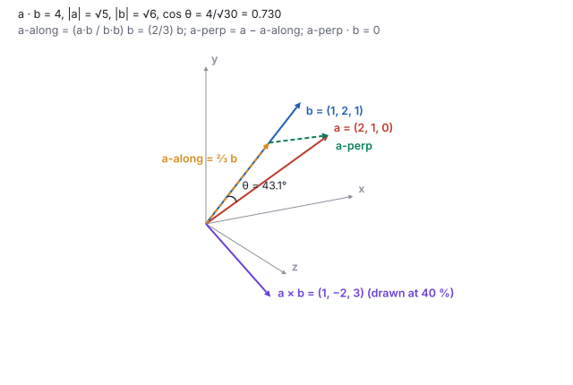
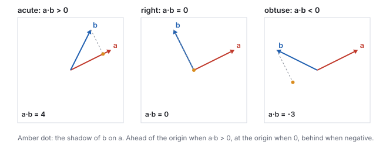
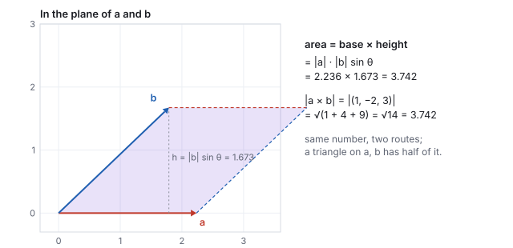
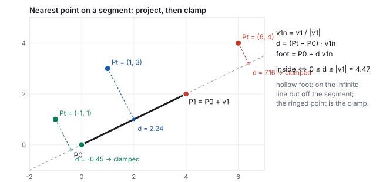
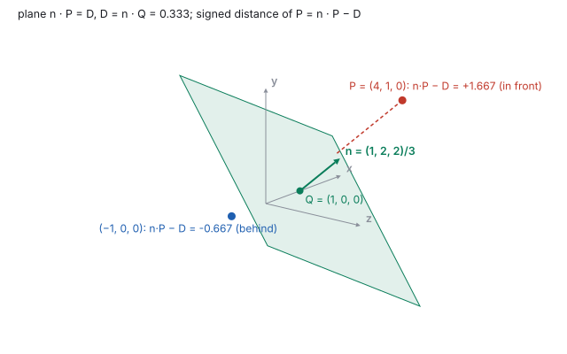

This chapter links to the course’s interactive demos and uses MathJax for its
formulas. Read it through the course website (or download the file and open it in a
browser); a Canvas inline preview will reach neither the demos nor the math.
All chapters.
Vectors: Dot and Cross Products, Lines and Planes
CSS 551 · Advanced 3D Computer Graphics · course text
Course text · the two products every later chapter is built from, and the two shapes they describe. Assigned by your offering’s course site; pairs with the lecture on vectors and rotations.
A vector is a displacement: a direction with a length, not a place. Two operations on vectors carry the whole of this course. The dot product answers “how aligned are these?” and yields angles, projections and which-side tests; the cross product answers “what is perpendicular to both?” and yields normals, areas and coordinate frames. Lines and planes are then a point plus a direction, or a point plus a normal, and every question about them is one of the two products again. One pair of vectors, \(\mathbf{a} = (2, 1, 0)\) and \(\mathbf{b} = (1, 2, 1)\), runs through every worked example and through the live demo, so the numbers on the page and the numbers on the screen agree to the last digit.
Two different things wear the same three numbers \((x, y, z)\). A position
is a place, measured from the origin. A displacement is how to get from
one place to another: an arrow with a direction and a length, which you may pick up and
put down anywhere. A position is the special displacement from the origin, and that is
the only reason a point and a vector look alike. The distinction returns with force in
the affine chapter, where a translation moves points
and leaves displacements alone.
Definition (the vector operations)
For \(\mathbf{u}, \mathbf{v} \in \mathbb{R}^3\) and a scalar \(s\):
\[
\mathbf{u} + \mathbf{v} = (u_x + v_x,\; u_y + v_y,\; u_z + v_z), \qquad
s\,\mathbf{v} = (s v_x,\; s v_y,\; s v_z), \qquad
\|\mathbf{v}\| = \sqrt{v_x^2 + v_y^2 + v_z^2}, \qquad
\hat{\mathbf{v}} = \mathbf{v} / \|\mathbf{v}\| .
\]
The displacement from a point \(P_i\) to a point \(P_j\) is tip minus tail,
\(P_j - P_i\). A unit vector \(\hat{\mathbf{v}}\) has length 1 and is the honest
representation of a direction: no length smuggled in.
Worked example (aim and march)
A drone at \(A = (1, 0, 2)\) must fire at a target at \(R = (4, 0, -2)\). The aim is the
displacement \(R - A = (3, 0, -4)\), of length \(\sqrt{9 + 16} = 5\), so the unit aim is
\((0.6, 0, -0.8)\). Marching at speed 10 for a frame of \(0.016\) s moves the projectile
by \(10 \times 0.016 \times (0.6, 0, -0.8) = (0.096, 0, -0.128)\): a scale, then an add.
Reverse the subtraction and the projectile flies away from the target, which is the
first bug everyone writes.
2 · The dot product
Three questions, one number: how aligned are two directions, how much of one points along the other, and is a thing in front of me or behind me.
Definition (dot product)
\[
\mathbf{a}\cdot\mathbf{b} \;=\; a_x b_x + a_y b_y + a_z b_z \;=\; \|\mathbf{a}\|\,\|\mathbf{b}\|\cos\theta ,
\]
where \(\theta\) is the angle between the vectors. The first form is how to compute it
(three multiplies, two adds); the second is what it means. Their equality is the entire
power of the dot product: set them equal and the angle falls out,
\(\cos\theta = \mathbf{a}\cdot\mathbf{b} / (\|\mathbf{a}\|\|\mathbf{b}\|)\).

The pair that runs through this chapter and the demo. The amber arrow is the shadow of \(\mathbf{a}\) on \(\mathbf{b}\), the green one is what is left over, and the purple arrow is \(\mathbf{a}\times\mathbf{b}\), perpendicular to both (drawn at 40 % of its length so it fits).
Worked example (the dot, the lengths, the angle)
With \(\mathbf{a} = (2,1,0)\) and \(\mathbf{b} = (1,2,1)\):
The scalar \((\mathbf{a}\cdot\mathbf{b})/(\mathbf{b}\cdot\mathbf{b})\) is how many copies of
\(\mathbf{b}\) fit in the shadow of \(\mathbf{a}\). When \(\mathbf{b}\) is a unit vector the
denominator is 1 and \(\mathbf{a}\cdot\hat{\mathbf{b}}\) is directly the shadow’s
length, positive or negative. This split is the move behind reflection, shadows,
Rodrigues’ rotation formula in the rotation chapter, and
the frame construction of Section 4.
Worked example (the split, and the check)
\(\mathbf{a}\cdot\mathbf{b} = 4\) and \(\mathbf{b}\cdot\mathbf{b} = 6\), so the scalar is \(2/3\).
\[
\mathbf{a}_{\parallel} = \tfrac23 (1, 2, 1) = (0.667, 1.333, 0.667), \qquad
\mathbf{a}_{\perp} = (2, 1, 0) - (0.667, 1.333, 0.667) = (1.333, -0.333, -0.667).
\]
Check that the remainder is perpendicular to \(\mathbf{b}\), in exact thirds:
\(\mathbf{a}_{\perp}\cdot\mathbf{b} = \tfrac43\cdot1 - \tfrac13\cdot2 - \tfrac23\cdot1 = \tfrac{4 - 2 - 2}{3} = 0\).
The two pieces rebuild \(\mathbf{a}\), and one dot product proves the split is right.
2.2 The sign is a decision

No square root, no arccosine: the sign of the dot product alone says acute, right, or obtuse. The amber dot is the foot of \(\mathbf{b}\) on the line of \(\mathbf{a}\); it sits ahead of the origin, on it, or behind it.
If \(\mathbf{a}\) is the way the drone faces and \(\mathbf{b}\) points toward the target,
\(\mathbf{a}\cdot\mathbf{b} > 0\) means the target is ahead. Section 6 reuses this sign
verbatim as the which-side-of-a-plane test.
See it liveDot and cross products:
the same six numbers drive the 3D arrows and the value panel. Drag \(\mathbf{a}\) past
square to \(\mathbf{b}\) and watch the dot cross zero while the projection collapses.
3 · The cross product
The dot gives a number; sometimes a direction is needed: which way a triangle faces, a third axis given two, the size of the parallelogram two edges span.
Definition (cross product)
\[
\mathbf{a}\times\mathbf{b} \;=\; \big(a_y b_z - a_z b_y,\;\; a_z b_x - a_x b_z,\;\; a_x b_y - a_y b_x\big),
\]
a vector perpendicular to both inputs, with length \(\|\mathbf{a}\|\|\mathbf{b}\|\sin\theta\)
(the area of the parallelogram they span) and direction given by the right-hand rule:
fingers along \(\mathbf{a}\), curl toward \(\mathbf{b}\), thumb along \(\mathbf{a}\times\mathbf{b}\).
Swapping the inputs flips it: \(\mathbf{b}\times\mathbf{a} = -(\mathbf{a}\times\mathbf{b})\).
The component formula has a cyclic pattern (the \(x\) component uses \(y\) and \(z\), the
\(y\) component uses \(z\) and \(x\), the \(z\) component uses \(x\) and \(y\)), which is
how to remember it.
Worked example (the cross, and two proofs)
\[
\mathbf{a}\times\mathbf{b} = (1\cdot1 - 0\cdot2,\; 0\cdot1 - 2\cdot1,\; 2\cdot2 - 1\cdot1) = (1, -2, 3).
\]
Perpendicular to both, each dot must vanish:
\((1,-2,3)\cdot(2,1,0) = 2 - 2 + 0 = 0\) and \((1,-2,3)\cdot(1,2,1) = 1 - 4 + 3 = 0\).
Its length is \(\sqrt{1 + 4 + 9} = \sqrt{14} = 3.742\). The geometric form gives the same:
\(\sqrt5\cdot\sqrt6\cdot\sin 43.1^\circ = 5.477 \times 0.683 = 3.742\). Reversed,
\(\mathbf{b}\times\mathbf{a} = (-1, 2, -3)\).

The parallelogram spanned by \(\mathbf{a}\) and \(\mathbf{b}\), drawn in the plane they share. Base times height is \(2.236 \times 1.673 = 3.742\), which is \(\|\mathbf{a}\times\mathbf{b}\|\). A triangle on the same two edges has half that area, \(1.871\), which is how a mesh face’s area is found.
3.1 The normal of a triangle
A face with corners \(P_0, P_1, P_2\) has edges \(\mathbf{e}_1 = P_1 - P_0\) and
\(\mathbf{e}_2 = P_2 - P_0\), and its normal is \(\hat{\mathbf{n}} = \widehat{\mathbf{e}_1\times\mathbf{e}_2}\).
Which side the normal points to is decided by the order of the corners, so a mesh whose
faces are wound inconsistently has half its normals pointing inward. This single idea,
normal equals normalized cross of two edges, reappears in meshes, lighting, and collision
for the rest of the course.
Worked example (a face normal)
\(P_0 = (0,0,0)\), \(P_1 = (2,0,0)\), \(P_2 = (0,0,-2)\): edges \((2,0,0)\) and \((0,0,-2)\),
cross \((0\cdot(-2) - 0\cdot0,\; 0\cdot0 - 2\cdot(-2),\; 0) = (0, 4, 0)\), normal \((0,1,0)\):
the face lies in the ground plane and faces up. Swap \(P_1\) and \(P_2\) and the normal is
\((0,-1,0)\), facing down. Same triangle, opposite winding.
4 · From two vectors to a frame
Given any two non-parallel vectors, one cross product gives an axis square to both and a
second cross completes an orthonormal trio. This is exactly how a camera’s
look-at basis is built in the viewing chapter:
Three unit vectors from the pair \(\mathbf{a}, \mathbf{b}\): \(\mathbf{w} = (0.894, 0.447, 0)\), \(\mathbf{u} = (0.267, -0.535, 0.802)\), \(\mathbf{t} = (0.359, -0.717, -0.598)\). Every pairwise dot product is zero.
Worked example (three right angles)
\(\mathbf{a}\times(\mathbf{a}\times\mathbf{b}) = (2,1,0)\times(1,-2,3) = (1\cdot3 - 0,\; 0 - 2\cdot3,\; -4 - 1) = (3, -6, -5)\).
The three raw directions \((2,1,0)\), \((1,-2,3)\), \((3,-6,-5)\) are mutually
perpendicular: \((2,1,0)\cdot(1,-2,3) = 0\) was shown above;
\((2,1,0)\cdot(3,-6,-5) = 6 - 6 + 0 = 0\); \((1,-2,3)\cdot(3,-6,-5) = 3 + 12 - 15 = 0\).
Normalize each and the frame is orthonormal. Note the second cross uses \(\mathbf{a}\)
again, not \(\mathbf{b}\): \(\mathbf{b}\) is only needed once, to say which plane the first
axis should be square to.
5 · Lines and segments
Definition (parametric line, segment)
A line is a base point and a direction, \(P(t) = P_0 + t\,\mathbf{d}\), \(t\in\mathbb{R}\);
with \(\mathbf{d}\) unit, \(t\) is a distance along it. A segment from
\(P_0\) to \(P_1 = P_0 + \mathbf{v}\) is the same with \(t\) held to \([0, \|\mathbf{v}\|]\).
The nearest point on a line to a query point \(P_t\) is a projection: dot the offset
\(P_t - P_0\) against the unit direction to get the distance \(d\) along the line, and step
that far. For a segment, clamp \(d\) to the endpoints first. That clamp is the one line
separating “the infinite line” from “the thing you can walk on”.

Nearest point on a segment, three cases. The dashed drop is the perpendicular to the infinite line; where its foot falls outside \([0, \|\mathbf{v}\|]\), the nearest point of the segment is the end it overshot (ringed).
Worked example (point to segment, three points)
Segment \(P_0 = (0,0)\) to \(P_1 = (4,2)\): \(\mathbf{v} = (4,2)\), \(\|\mathbf{v}\| = 4.472\),
\(\hat{\mathbf{v}} = (0.894, 0.447)\).
\(P_t\)
\(d = (P_t - P_0)\cdot\hat{\mathbf{v}}\)
foot \(P_0 + d\hat{\mathbf{v}}\)
inside?
nearest point of the segment
\((1, 3)\)
\(0.894 + 1.342 = 2.236\)
\((2, 1)\)
yes
\((2, 1)\), at distance \(2.236\)
\((6, 4)\)
\(5.367 + 1.789 = 7.155\)
\((6.4, 3.2)\)
no, \(d > 4.472\)
the far end \((4, 2)\)
\((-1, 1)\)
\(-0.894 + 0.447 = -0.447\)
\((-0.4, -0.2)\)
no, \(d < 0\)
the start \((0, 0)\)
Every entry is a dot, a scale, an add, or a comparison.
6 · Planes and signed distance
Definition (plane)
A plane is the set of points whose dot product with a fixed normal is constant,
\[
\hat{\mathbf{n}}\cdot P = D, \qquad D = \hat{\mathbf{n}}\cdot Q \text{ for any known point } Q \text{ on the plane.}
\]
With \(\hat{\mathbf{n}}\) unit, \(D\) is the plane’s signed distance from the origin
and, for any point \(P\), the signed distance to the plane is
\(\hat{\mathbf{n}}\cdot P - D\): positive on the side the normal points to, zero on the plane,
negative behind.

The plane through \(Q\) with normal \(\hat{\mathbf{n}}\). The signed distance is one dot product and one subtraction; its sign is the which-side test.
Worked example (point to plane)
Plane through \(Q = (1,0,0)\) with normal \(\mathbf{m} = (1,2,2)\). Normalize first:
\(\|\mathbf{m}\| = \sqrt{1 + 4 + 4} = 3\), \(\hat{\mathbf{n}} = (\tfrac13, \tfrac23, \tfrac23)\),
\(D = \hat{\mathbf{n}}\cdot Q = \tfrac13\). For \(P = (4, 1, 0)\):
\[
\hat{\mathbf{n}}\cdot P - D = \frac{4 + 2 + 0}{3} - \frac13 = \frac{5}{3} = 1.667 \quad (\text{in front}).
\]
For \((-1, 0, 0)\): \(-\tfrac13 - \tfrac13 = -0.667\), behind. The foot of \(P\) on the plane
is \(P - 1.667\,\hat{\mathbf{n}} = (3.444, -0.111, -1.111)\); check:
\(\hat{\mathbf{n}}\cdot(3.444, -0.111, -1.111) = (3.444 - 0.222 - 2.222)/3 = 0.333 = D\).
Skipping the normalization is the common mistake: with \(\mathbf{m}\) unnormalized the
“distance” would be three times too large.
The which-side test needs no distance at all: the sign of
\(\hat{\mathbf{n}}\cdot P - D\) is the in-front-of test of Section 2.2 with the plane’s
constant subtracted. Frustum culling, back-face tests and portal visibility are this sign,
evaluated many times.
7 · The same operations in code
The course’s library and Unity’s Vector3 expose exactly the atoms
above: components, magnitude, normalize, dot, cross. The implement-and-replace rule of the
studios is to build the query from the atoms first, then check it against the engine call.
The point-to-segment query of Section 5, in the library’s style:
const v1 = sub(P1, P0); // segment direction
const v1n = normalize(v1); // unit direction
const d = dot(sub(Pt, P0), v1n); // projected distance along the line
const foot = add(P0, scale(v1n, d)); // the foot of the perpendicular
const inside = d >= 0 && d <= length(v1); // the clamp test
Two habits keep this code honest. Normalize before you dot when you want a length, or the
result is scaled by the direction’s magnitude. And guard against zero-length
vectors: a zero vector has no direction, so its angle with anything is undefined and the
division in the cosine formula blows up.
8 · Exercises
Exercise 1 (angle)
Find the angle between \((1, 1, 0)\) and \((1, 0, 1)\).
Solution
Dot \(= 1\); both lengths \(\sqrt2\); \(\cos\theta = 1/2\); \(\theta = 60^\circ\). Two edges of a cube’s corner diagonal triangle: the triangle is equilateral.
Exercise 2 (projection)
Split \(\mathbf{a} = (3, 4, 0)\) along and across \(\mathbf{b} = (1, 0, 0)\), then along and across \(\mathbf{c} = (1, 1, 0)\).
Solution
Along \(\mathbf{b}\): scalar \(3/1\), \(\mathbf{a}_\parallel = (3,0,0)\), \(\mathbf{a}_\perp = (0,4,0)\).
Along \(\mathbf{c}\): scalar \(7/2\), \(\mathbf{a}_\parallel = (3.5, 3.5, 0)\), \(\mathbf{a}_\perp = (-0.5, 0.5, 0)\); check \((-0.5, 0.5, 0)\cdot(1,1,0) = 0\).
Exercise 3 (area)
A triangle has corners \((0,0,0)\), \((3,0,0)\), \((0,4,0)\). Compute its area two ways.
Solution
Edges \((3,0,0)\), \((0,4,0)\); cross \((0,0,12)\); half its length is 6. Base 3, height 4, half the product is 6.
Exercise 4 (a frame)
Build an orthonormal frame from \(\mathbf{a} = (0,0,1)\) and \(\mathbf{b} = (1,0,1)\). What goes wrong if \(\mathbf{b} = (0,0,2)\)?
Solution
\(\mathbf{w} = (0,0,1)\); \(\mathbf{a}\times\mathbf{b} = (0\cdot1 - 1\cdot0,\; 1\cdot1 - 0\cdot1,\; 0) = (0, 1, 0)\), so \(\mathbf{u} = (0,1,0)\); \(\mathbf{a}\times\mathbf{u} = (0\cdot0 - 1\cdot1,\; 1\cdot0 - 0\cdot0,\; 0) = (-1, 0, 0)\). With \(\mathbf{b} = (0,0,2)\) the cross is \((0,0,0)\): parallel inputs span no plane, and there is no way to choose the second axis. This is the “up parallel to the view direction” failure of every look-at function.
Exercise 5 (segment)
For the segment of Section 5, find the nearest point to \(P_t = (2, -2)\) and the distance to it.
Solution
\(d = (2, -2)\cdot(0.894, 0.447) = 1.789 - 0.894 = 0.894\), inside; foot \(= 0.894\,(0.894, 0.447) = (0.8, 0.4)\); distance \(\|(2,-2) - (0.8, 0.4)\| = \sqrt{1.44 + 5.76} = 2.683\).
Exercise 6 (which side)
The plane of Section 6 again. Classify \((0,0,0)\), \((1,1,1)\) and \((2,-1,0)\).
Solution
\(\hat{\mathbf{n}}\cdot P - D\): \(0 - \tfrac13 = -0.333\) (behind); \(\tfrac{5}{3} - \tfrac13 = 1.333\) (in front); \(\tfrac{2 - 2 + 0}{3} - \tfrac13 = -0.333\) (behind). The origin is behind the plane because \(D > 0\) puts the plane on the normal’s side of it.